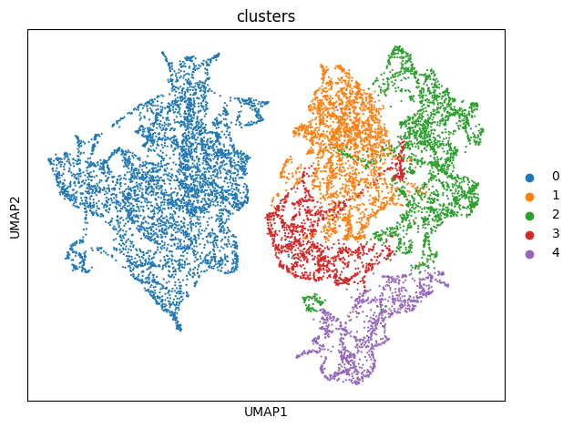

Tutorial 2: SpaCon for layer6 CT neuron subtype classification
[1]:
import sys
sys.path.append("/mnt/Data16Tc/home/haichao/code/SpaCon_github/SpaCon/SpaCon/")
from scipy.sparse import coo_matrix, save_npz, load_npz
from model.utils import build_spatial_graph, build_connection_graph, neighbor_sample, model_train, model_eval, clustering
from model.Model_Pyg_SpaCon import SpaCon
# from model.r_mcluster import mclust_R
import torch.nn.functional as F
import copy
import datetime
import os
import scanpy as sc
import pandas as pd
import matplotlib.pyplot as plt
import torch
import numpy as np
from tqdm import tqdm
import pickle
import warnings
warnings.filterwarnings("ignore")
mus = 'mouse_3'
if mus == 'mouse_1': # coronal
plot_x, plot_y = 'z', 'y'
figsize = (5,5)
elif mus == 'mouse_3': # sagittal
plot_x, plot_y = 'x', 'y'
figsize = (11,5)
def set_seed(seed: int):
os.environ['PYTHONHASHSEED'] = str(seed)
random.seed(seed)
np.random.seed(seed)
torch.manual_seed(seed)
torch.cuda.manual_seed(seed)
torch.cuda.manual_seed_all(seed)
torch.backends.cudnn.deterministic = True
torch.backends.cudnn.benchmark = False
set_seed(42)
Data preprocessing
load spatial transcriptomics data
[2]:
adata = sc.read_h5ad(f'./data/{mus}/adata_030_L6_CT_CTX_Glut_and_th.h5ad')
print('raw adata shape:', adata.shape)
sc.pp.normalize_total(adata, target_sum=1e4)
sc.pp.log1p(adata)
adata
raw adata shape: (11490, 1122)
[2]:
AnnData object with n_obs × n_vars = 11490 × 1122
obs: 'x', 'y', 'z', 'section', 'NT_index', 'Cells_id'
uns: 'log1p'
build spatial graph
[3]:
# build the section list
section_order = np.unique(adata.obs['section']).tolist()
# calculate the spatial graph for the adata
ST_graph_data, st_adj = build_spatial_graph(adata=adata, rad_cutoff=0.9, rad_cutoff_Zaxis=1.5,
sec_x='x', sec_y='y', key_section='section',
section_order=section_order)
ST_graph_data
100%|██████████| 21/21 [00:00<00:00, 135.92it/s]
100%|██████████| 20/20 [00:07<00:00, 2.54it/s]
[3]:
Data(x=[11490, 1122], edge_index=[2, 142264])
load connectivity data and build connection graph
[4]:
with open(f'/mnt/Data18Td/Data/haichao/mouse_connect_data/NT/zxw/{mus}/PyG_Data_eps0.001_0.027_030_L6_CT_CTX_Glut_and_th_only_ctx2th_conn.pkl', 'rb') as f:
NT_graph_data = pickle.load(f)
# with open(f'/mnt/Data18Td/Data/haichao/mouse_connect_data/ST/zxw/{mus}/PyG_Data_xy0.7_z1.0.pkl', 'rb') as f:
# ST_graph_data = pickle.load(f)
# st_adj = load_npz(f'/mnt/Data18Td/Data/haichao/mouse_connect_data/ST/zxw/{mus}/zxw_adj.npz')
# nt_adj = np.load('/mnt/Data18Td/Data/haichao/mouse_connect_data/NT/zxw/mouse_1/zxw_adj.npy')
# NT_graph_data = build_connection_graph(adata, nt_adj, threshold=0.001)
NT_graph_data
[4]:
Data(x=[11490, 1122], edge_index=[2, 3577632])
[5]:
train_loader, evaluate_loader_con, evaluate_loader_spa = neighbor_sample(NT_graph_data, ST_graph_data, batch_size=64, train_num_neighbors=[20, 10, 10], num_workers=4)
[6]:
device = torch.device('cuda:0' if torch.cuda.is_available() else 'cpu')
# hyper-parameters
num_epoch = 10
lr = 0.0001
weight_decay = 1e-4
hidden_dims = [adata.X.shape[1]] + [256, 64, 16]
# model
model = SpaCon(hidden_dims=hidden_dims, fusion_method='concat').to(device)
# if model_save_path=None, the model will not be saved
results_save_path = f"./results_celltype/{mus}/{str(datetime.datetime.now().strftime('%Y_%m_%d_%H_%M_%S'))}/"
os.makedirs(results_save_path, exist_ok=True)
model = model_train(num_epoch, lr, weight_decay, model, train_loader, st_adj, model_save_path=results_save_path, device=device)
epoch:1|10
100%|██████████| 180/180 [00:05<00:00, 30.46it/s]
epoch:2|10
100%|██████████| 180/180 [00:05<00:00, 31.76it/s]
epoch:3|10
100%|██████████| 180/180 [00:05<00:00, 32.76it/s]
epoch:4|10
100%|██████████| 180/180 [00:05<00:00, 32.22it/s]
epoch:5|10
100%|██████████| 180/180 [00:05<00:00, 33.57it/s]
epoch:6|10
100%|██████████| 180/180 [00:05<00:00, 33.28it/s]
epoch:7|10
100%|██████████| 180/180 [00:05<00:00, 32.67it/s]
epoch:8|10
100%|██████████| 180/180 [00:05<00:00, 33.06it/s]
epoch:9|10
100%|██████████| 180/180 [00:05<00:00, 33.67it/s]
epoch:10|10
100%|██████████| 180/180 [00:05<00:00, 32.16it/s]
Training completed! The model parameters have been saved to ./results_celltype/mouse_3/2025_07_11_15_20_25//model_params.pth
[7]:
adata = model_eval(model, adata, NT_graph_data, ST_graph_data, evaluate_loader_con, evaluate_loader_spa, st_adj, layer_eval=True, device=device)
Evaluating: 100%|██████████| 34470/34470 [00:05<00:00, 6619.71it/s]
Evaluating: 100%|██████████| 34470/34470 [00:03<00:00, 8936.06it/s]
The results have been saved in adata.obsm
AnnData object with n_obs × n_vars = 11490 × 1122
obs: 'x', 'y', 'z', 'section', 'NT_index', 'Cells_id'
uns: 'log1p'
obsm: 'feature_spa', 'feature_con'
[10]:
adata = clustering(adata, alpha=0, adata_save_path=results_save_path, cluster_resolution=0.1,
plot_all_cluster_results=True, figsize=figsize, plot_x=plot_x, plot_y=plot_y)
The clustering results have been saved in ./results_celltype/mouse_3/2025_07_11_15_20_25//feature_add_weight0/Clusters_res0.1/
AnnData object with n_obs × n_vars = 11490 × 1122
obs: 'x', 'y', 'z', 'section', 'NT_index', 'Cells_id', 'clusters'
uns: 'log1p', 'neighbors', 'umap', 'louvain', 'clusters_colors'
obsm: 'feature_spa', 'feature_con', 'feature_add', 'X_umap'
obsp: 'distances', 'connectivities'
100%|██████████| 5/5 [00:10<00:00, 2.00s/it]

[ ]: